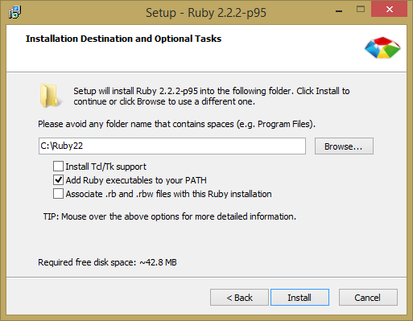
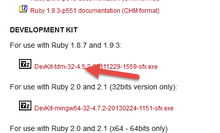
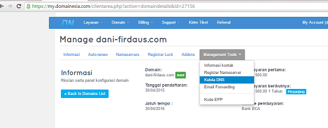
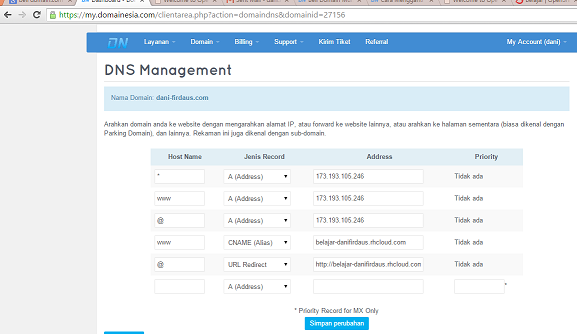
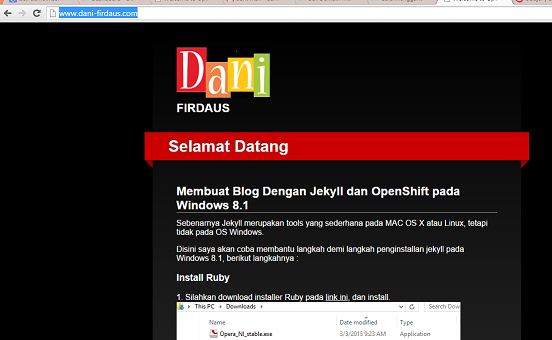

Disini saya akan coba membantu langkah demi langkah penginstallan jekyll pada Windows 8.1, berikut langkahnya :
2. Tick Kotak "Add Ruby executables to your PATH" 
1. Download dahulu installer Ruby Devkit disini, lalu extract 
2. xecutables to your PATH"
2. Masuk kedalam settingan DNS di control panel tambah record Cname dan masukkan url openshift kita  
3. Dan cek domain dibrowser 
Copyright © How to Install Jekyll on Windows | Dani 2015